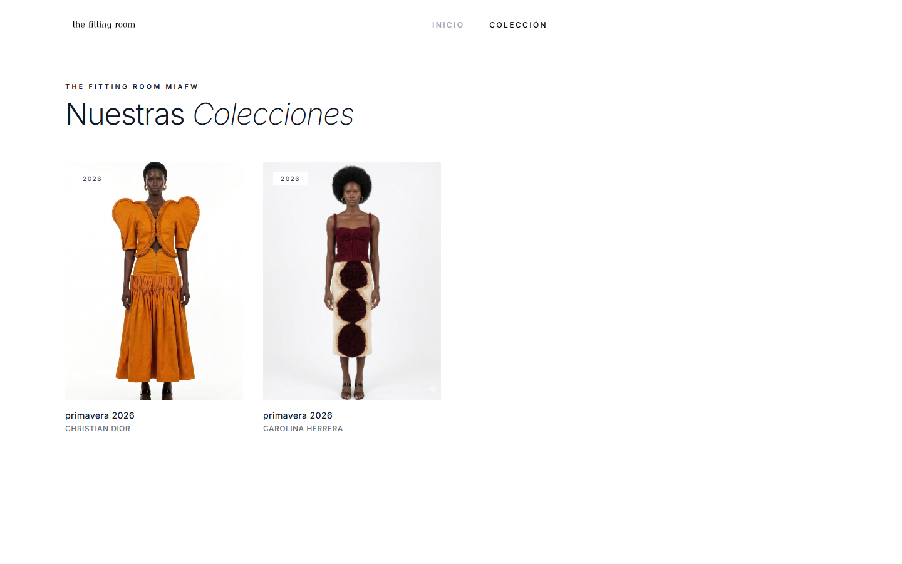
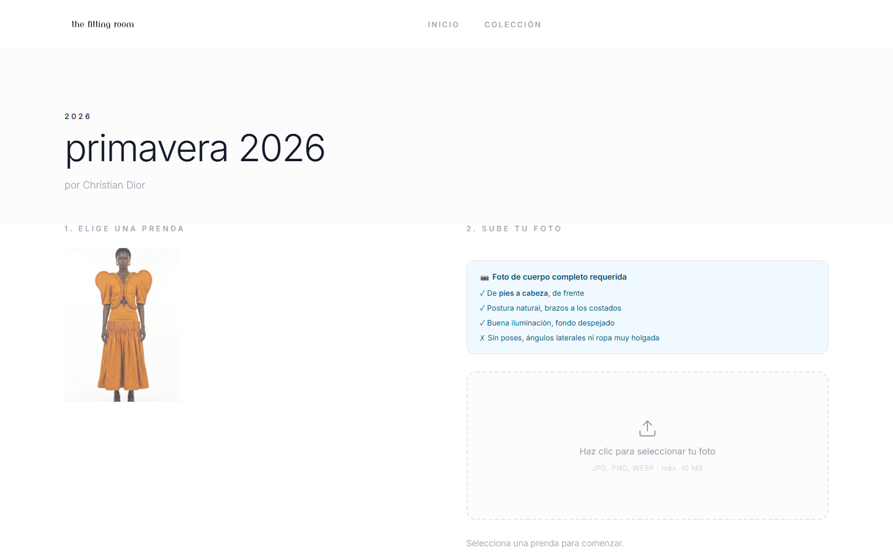
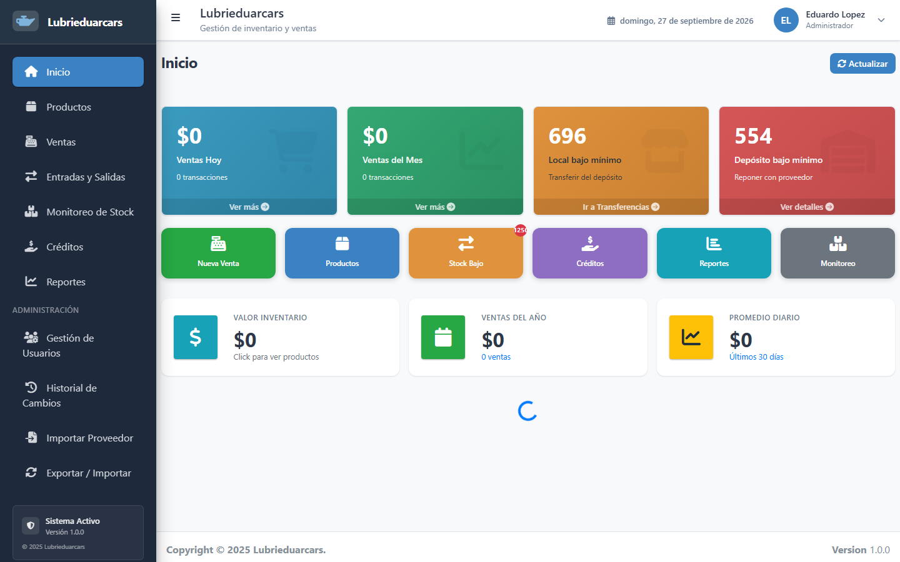
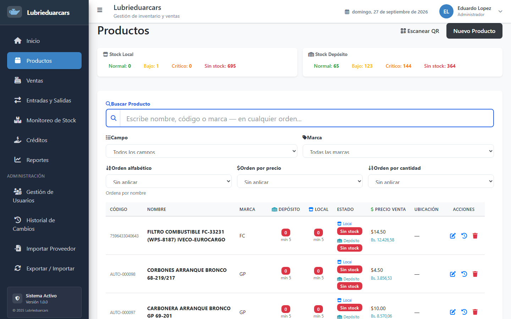
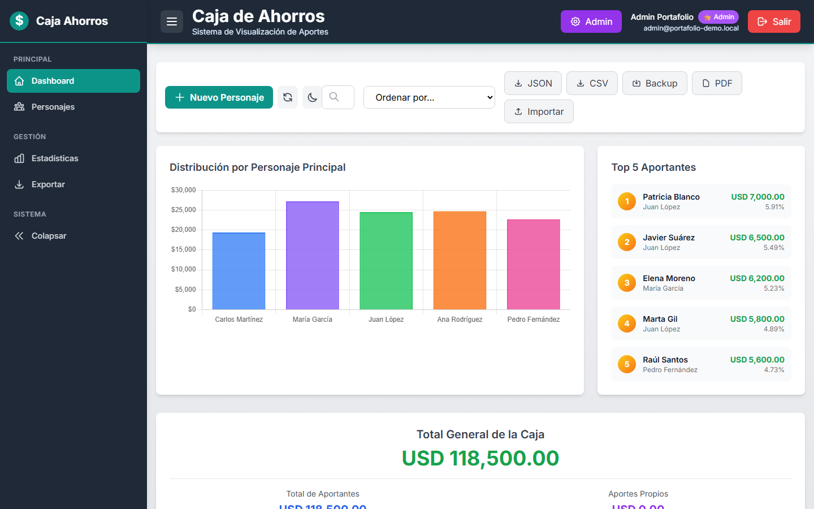
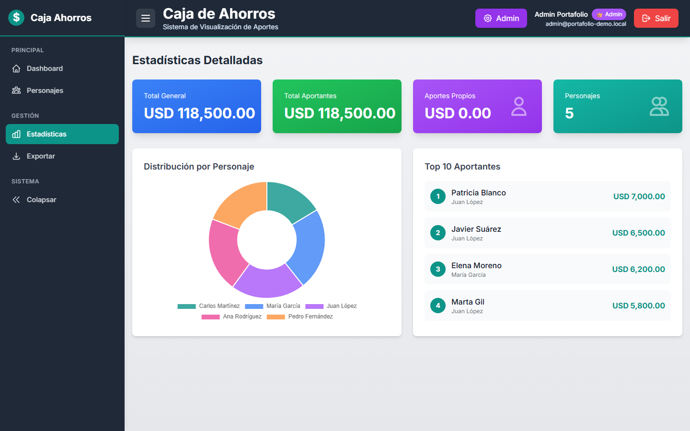

Desarrollador Full Stack & Mobile — construyo sistemas completos: base de datos, API, interfaz y despliegue en producción.
Tres proyectos reales documentados a continuación: el problema que resolvían, cómo se construyeron y el repositorio con el código. Cada uno corre en producción o tiene una demo funcional enlazada.

Para Miami Fashion Week (MIAFW) construí una aplicación de prueba virtual de prendas: el visitante elige una pieza del catálogo, sube una foto de cuerpo completo y ve cómo le queda, generado con IA (FASHN API).
El acceso funciona en dos modos: por código enviado al correo (para navegar antes del evento) o por QR físico en el stand (para probarse prendas al instante). Un sistema de créditos con Stripe controla cuántas pruebas puede hacer cada usuario, y el panel de administración gestiona diseñadores, colecciones, prendas y el evento completo.


Un negocio de repuestos y lubricantes necesitaba dejar de llevar el inventario en hojas de cálculo: no sabían qué se estaba por agotar hasta que ya faltaba, y contar el stock a mano tomaba horas.
Construí un sistema con escaneo de códigos QR para registrar entradas y salidas en segundos, un dashboard que separa el stock del local y del depósito y marca en rojo lo crítico, y un módulo de ventas con conversión automática USD/Bs. Incluye reportes por categoría, movimientos e inventario, e importación de documentos de proveedores con OCR.


Un grupo de ahorro con varios participantes principales y decenas de aportantes necesitaba una forma clara de ver quién había aportado cuánto, sin depender de una hoja de cálculo compartida que cualquiera podía romper por error.
Diseñé un panel con roles (admin, editor, visor) donde cada aportante queda asociado a un participante principal, con gráficas de distribución, un ranking de los mayores aportantes y exportación a JSON, CSV y PDF para llevar registro fuera del sistema.

| # | Área | Componentes |
|---|---|---|
| 01 | Backend | Node.js, Express, NestJS, Laravel, Django · APIs REST y GraphQL · JWT/OAuth2 · Prisma, TypeORM, Sequelize |
| 02 | Frontend | React, Next.js, Vite, Tailwind CSS, Bootstrap · PWAs y diseño responsive |
| 03 | Móvil | React Native (Android), React Navigation, generación de APK |
| 04 | Datos | PostgreSQL, MySQL/MariaDB, MongoDB, SQLite |
| 05 | DevOps | Linux (Ubuntu), Nginx, PM2, Docker, GitLab CI/CD, Let's Encrypt |
| 06 | IA y automatización | OpenAI, FASHN API, Tesseract OCR, Python (Pandas, Selenium) |